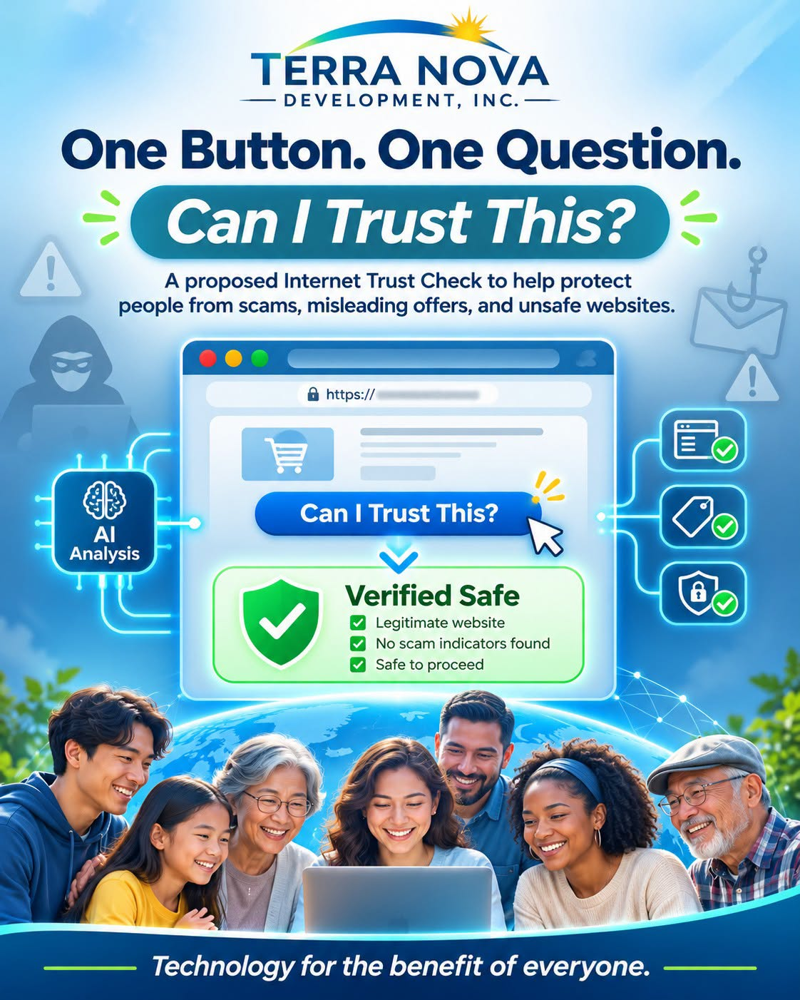

ARTICLE #005 · November 2026 · Willis Butts
TerraNova: Making the Internet a Safer Place for Everyone
One Button. One Question. Can I Trust This?

Proposed concept only. No existing tool can guarantee a website or offer is safe.
Every day, millions of people encounter advertisements, products, investment opportunities, charities, and subscription offers on the Internet. Some are legitimate. Some are misleading. Others are outright scams designed to steal our money or personal information.
Why should ordinary people have to become cybersecurity experts just to protect themselves?
Terra Nova Development, Inc. could help change that.
I propose that TerraNova develop a free, universal Internet verification service that allows anyone to evaluate an online offer with a single click.
Imagine browsing Facebook, shopping online, or reading an advertisement. Something catches your attention, but you're uncertain whether you should trust it.
Instead of spending hours researching the company, checking reviews, and comparing prices, you simply click a button: “IS THIS A GOOD DEAL?”
Within seconds, an AI-powered system analyzes the available evidence and gives you a straightforward assessment.
How Would It Work?
The TerraNova Internet Trust Check would examine five important questions:
Is it legitimate? Does the business actually exist? Is the website authentic? Are there indications of fraud or impersonation?
Is it safe? Does the website have known security problems, suspicious behavior, or reports of phishing?
Is it truthful? Are the advertised claims supported by reliable evidence, or are they misleading or exaggerated?
Is it a good deal? How does the price compare with alternatives? Are there hidden fees, automatic renewals, or unreasonable restrictions?
What do other consumers say? Are there credible complaints, independent reviews, or patterns of unresolved problems?
The system would provide a simple explanation, links to supporting evidence, and warnings when something cannot be verified.
Preventing Fraud Before It Happens
Today, much of our fraud prevention system operates after people have already been victimized.
Someone loses their savings. Someone has their identity stolen. Someone purchases a product that never arrives.
Then they file a complaint and hope someone investigates.
Why not prevent the fraud before the money changes hands?
Modern artificial intelligence, public business records, cybersecurity databases, consumer complaints, and price-comparison technology could be brought together into one accessible service.
It would not be perfect. No automated system can guarantee that every transaction is safe. But it could make informed decisions dramatically easier.
And every scam prevented represents money, time, and suffering saved.
Why TerraNova?
TerraNova's larger mission is to use the abundance of knowledge, technology, resources, and human cooperation to improve life for everyone.
Protecting people from Internet fraud fits naturally into that mission.
Consider the people who could benefit:
Seniors who are frequently targeted by sophisticated scams.
Families trying to stretch their limited incomes.
People unfamiliar with rapidly changing Internet technology.
Small businesses evaluating unfamiliar suppliers.
Charitable donors who want their contributions to reach legitimate organizations.
Anyone trying to determine whether an offer is worth their money.
Consumer protection should not depend on someone's wealth, education, or technical expertise.
Reliable information should be available to everyone.
A Public Service, Not Another Profit Center
My vision is that this service would be free to the public.
It could be developed as an open, transparent, nonprofit initiative, supported through grants, donations, institutional partnerships, and contributions from people who believe in consumer protection.
Its evaluations should be independent of advertisers. Businesses should not be able to purchase favorable ratings.
The service should also protect users' privacy, disclose uncertainty, and provide a fair process for correcting inaccurate assessments.
As the system develops, consumers could also report suspected scams, helping identify fraudulent operations and alert others before more people are harmed.
Think About the Bigger Picture
What if millions of people had a simple tool that helped them recognize scams before becoming victims?
What if dishonest advertisers discovered that misleading consumers was becoming increasingly difficult?
What if legitimate businesses benefited because consumers could more easily distinguish trustworthy offers from fraudulent ones?
We could begin changing the economics of Internet fraud.
Instead of making deception easy and verification difficult, we could make verification easy and deception harder.
And this technology would not have to stop with online shopping. Eventually, similar tools could help people evaluate misleading claims, questionable fundraising appeals, and other information they encounter online.
The TerraNova Philosophy
We already possess extraordinary technological capabilities. Artificial intelligence can analyze enormous amounts of information in seconds.
The question is not simply what technology can do.
The question is what we choose to do with it.
Should these capabilities primarily serve those who can afford expensive subscriptions, or can we organize them to protect and empower everyone?
TerraNova exists to explore the second possibility.
This proposal is one more example of how we can use technology, cooperation, and shared knowledge to build a better world.
One button. One question. Can I trust this?
It's a simple idea with the potential to protect millions of people.
And it is exactly the kind of initiative I believe Terra Nova Development, Inc. should pursue.
There is no them. There is only us.
We are one.